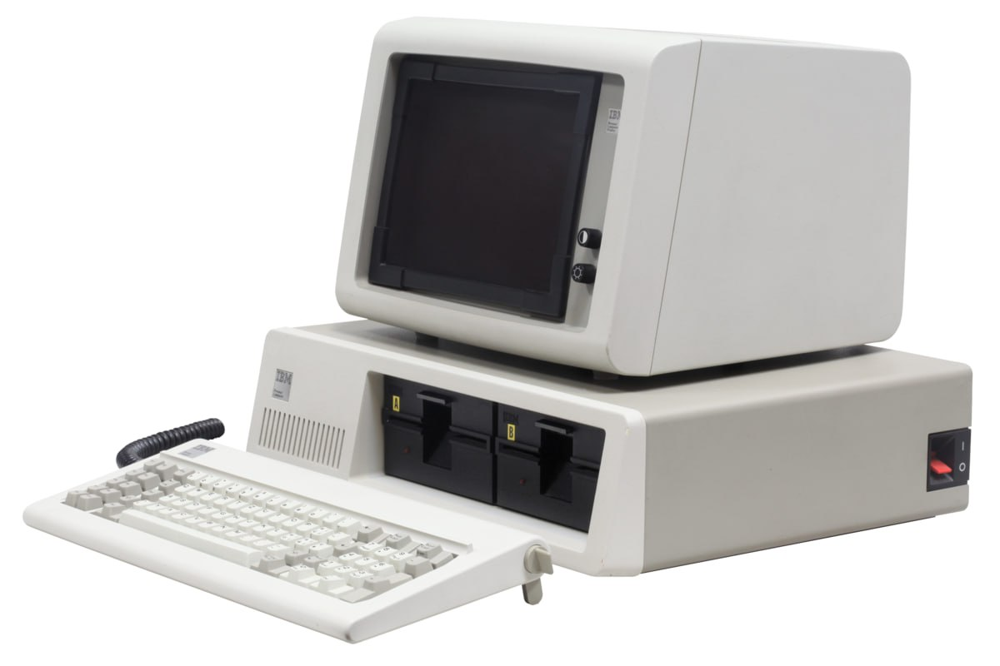
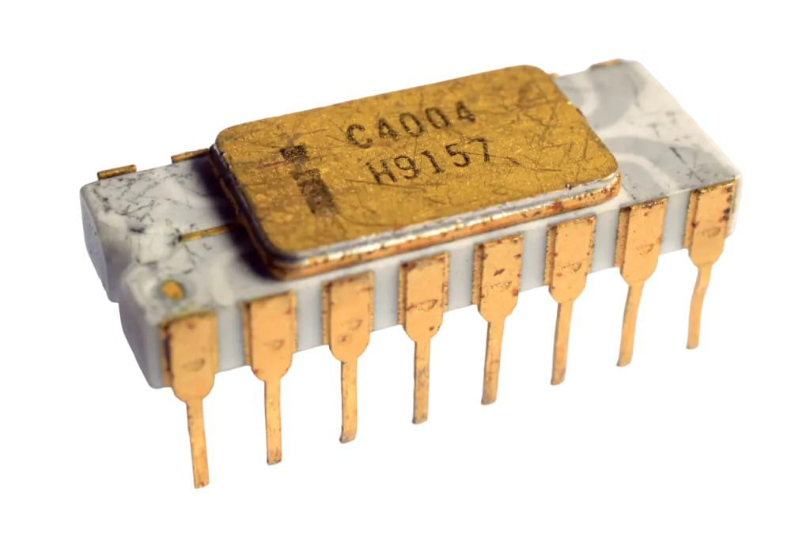

·CUARTA GENERACIÓN: (1971-1983) Miniaturización
-El elemento principal: microprocesador (millones de elementos
encapsulados).
-A consecuencia de la miniaturización, los ordenadores se hicieron
muchísimo más pequeños, sencillos y económicos, llegando al usuario
particular.
-La empresa IBM creó el Personal Computer (P.C), primer ordenador
personal, con sistema operativo MS-DOS desarrollado por Microsoft.
-Posteriormente el termino PC denominó a los ordenadores con elementos
compatibles.

